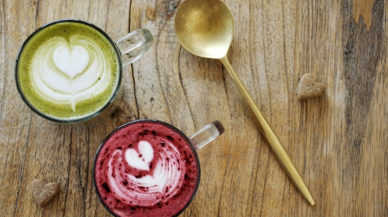
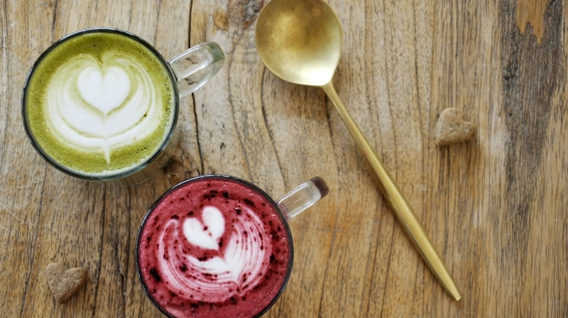
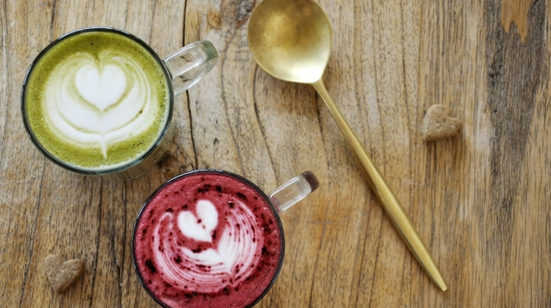

Below is a list of our beverages, all made with organic produce and a brief description of the brew

Espresso
Latte
Matcha or Beetroot Infusion

Our espresso shots are made using Herkimer Coffee Espresso Blend - a full bodied, strong shot size cup of espresso coffee, the perfect choice to perk you up before that big meeting!
Made the way Italy intended, our latte is crafted from ethically sources Peruvian beans with notes of walnut and molasses topped with an artisinally crafted logo on top from locally sourced milk.
These two options are for those who want something a little different, the first, a matcha coffee blend for a smoother, cleaner caffeine boost.
The second is a coffee infused with beetroot sourced from a farm in Doncaster to fill you with antioxidants for a healthy boost to begin your day.